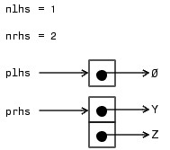
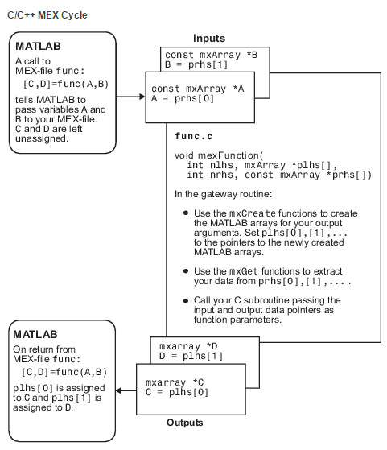

Matlab与C混合编程之一：基本原理
目录
1 引言
matlab是Mathworks公司推出的一款强大的仿真软件。由于其简单易用，建模迅捷，函数库保罗万象，因此得到广泛使用，尤其在通信与信息系统仿真中更是大显身手。matlab使用的语言也叫matlab，是一门脚本语言。脚本语言的特性决定了其编写方便快速，但是运行速度却不及C/C++等编译型语言。为综合脚本语言和编译型语言的优点，matlab支持与C的混合编程。本文是我的matlab与C混合编程系列博文的第一篇，主要介绍matlab如何调用C语言编写的函数。在之后的一些博文中介绍matlab提供的调用C函数需要使用的API。
这一系列博文的诸多例子来自matlab自带的帮助文档。在学习的过程中，结合自己的心得，成此博文。读者完全可以通过matlab的帮助文档来学习如何使用这些API。但matlab的帮助文档略显生硬，有些冷冰冰。在涉及重点以及可能会碰到的bug时，不会像我在这里大声疾呼:"这是个坑，小心"。因此我认为这些博文还是有其存在的价值。当然，我也力图博文朗朗上口，深入浅出，读起来引人入胜。
2 使用mex编译c函数
我们知道在C语言编程过程中，每个程序都包含 main 函数。在 main 函数中，我们可以调用我们编写的其他函数。如果要在matlab脚本中调用c函数，需要一个特殊的函数将用户自己定义的函数封装起来。这个函数叫做 mexFunction ， mexFunction 就像一座桥梁一样链接了matlab脚本语言和C这种编译型语言，matlab调用 mexFunction ， mexFunction 调用用户自定义的函数。接下来用一个简单的例子演示如何使用 mexFunction 将我们定义的函数封装起来以及如何在matlab中调用这个C函数。
2.1 一个例子
假设我们要实现：一个标量 \(x\) 乘以一个适量 \(\mathbf{Y}\)，结果保存在矢量 \(\mathbf{Z}\)中。整个过程如式\ref{eq:scalartimevector}所示。
\begin{equation} \label{eq:scalartimevector} \mathbf{Z} = x\mathbf{Y} \end{equation}
我们用C语言实现这个功能，函数命名为 arrayProduct ，代码如下(这个例子就来自matlab的帮助文档)：
1: void arrayProduct(double x, double *Y, double *Z, int n) 2: { 3: int i; 4: 5: for (i=0; i<n; i++) { 6: Z[i] = x * Y[i]; 7: } 8: }
2.2 编写源代码
打开matlab编辑器，创建一个新文件，为其添加文件头
/* *arrayProduct.c - example in MATLAB External Interfaces * * Multiplies an input scalar (multiplier) * times a 1xN matrix (inMatrix) * and outputs a 1xN matrix (outMatrix) * * The calling syntax is: * * outMatrix = arrayProduct(multiplier, inMatrix) * * This is a MEX-file for MATLAB. */ #include "mex.h"
以上代码来自matlab的帮助文档，其为我们展示了如何编写一个清新脱俗的文件头。最后一行是调用 C/C++ 函数必须的头文件，其包含了matlab定义的一些API。先把这个文件保存起来，文件名为 arrayProduct.c ，在后面我们用 mex 命令编译的 MEX 文件会自动命名为 arrayProduct 。在matlab的脚本里调用 arrayProduct 就像调用matlab的内嵌函数一样。对于用户来讲 mexFunction 是透明的，不用关心的。 mexFunction 需要程序员写好，供用户使用，然后程序员深藏功与名，幕后螺丝钉。
2.3 创建桥梁变量
这一部分是最重要的，在我学习matlab和c混合编程过程中，这一步用的时间最多。前文曾提到：每一个C程序都有一个 main 函数，但是matlab里有 mexFunction 函数。刚才的 arrayProduct.c 文件里添加 mexFunction 函数如下所示:
/* The gateway function */ void mexFunction(int nlhs, mxArray *plhs[], int nrhs, const mxArray *prhs[]) { /* variable declarations here */ /* code here */ }
初看 mexFunction 函数会感觉一头雾水， main 函数才最多两个输入参数，这个就有四个，而且指针的类型都没有见过。莫慌，表1解释了 mexFunction 的参数，我在后文还会附上详细解释。
| 参数名 | 含义 | 备注 |
|---|---|---|
nlhs |
number of output（left-side） arguments， plhs 的大小 |
number of left hand side |
plhs |
array of arguments, 输出参数的指针列表 | pointer of left hand side |
nrhs |
number of input（right-side） arguments， prhs 的大小 |
number of right hand side |
prhs |
array of input arguments, 输入参数的指针列表 | pointer of right hand side |
这里的左手边参数和右手边参数指的是matlab调用 arrayProduct 的过程中使用的实际参数，而 mexFunction 需要做的工作是把matlab调用的参数与用户定义的 arrayProduct.c 里的 arrayProduct 对应起来。假设现在我们已经把C函数 arrayProduct 变成了matlab可以调用的函数。其调用过程为：
x = 2; Y = [4, 3, 8]; Z = arrayProduct(x,Y)
那么，其 nlhs=1 ， nrhs=2 ， plhs 。在 mexFunction 中， plhs 就是指向 Z 的指针， prhs 就是指向 x,Y 的指针数组，因为右手边有两个参数，所以 prhs 是一个指针数组， prhs[0] 指向 x ， prhs[1] 指向 Y 。
好了，刚才我们简单解释了一下桥梁函数 mexFunction 的输入和输出，现在实现桥梁变量，到现在为止你的 arrayProduct.c 中的内容应该是：
1: /* 2: *arrayProduct.c - example in MATLAB External Interfaces 3: * 4: * Multiplies an input scalar (multiplier) 5: * times a 1xN matrix (inMatrix) 6: * and outputs a 1xN matrix (outMatrix) 7: * 8: * The calling syntax is: 9: * 10: * outMatrix = arrayProduct(multiplier, inMatrix) 11: * 12: * This is a MEX-file for MATLAB. 13: */ 14: #include "mex.h" 15: void arrayProduct(double x, double *Y, double *Z, int n) 16: { 17: int i; 18: 19: for (i=0; i<n; i++) { 20: Z[i] = x * Y[i]; 21: } 22: } 23: /* The gateway function */ 24: void mexFunction(int nlhs, mxArray *plhs[], 25: int nrhs, const mxArray *prhs[]) 26: { 27: /* variable declarations here */ 28: 29: /* code here */ 30: }
我们要在 mexFunction 函数体里定义与 x Y Z 对应的桥梁变量，这些桥梁变量链接了matlab脚本和 arrayProduct 函数。
void mexFunction(int nlhs, mxArray *plhs[], int nrhs, const mxArray *prhs[]) { /* variable declarations here */ double multiplier; /*input scalar x */ double *inArray; /* 1xN input array */ int arraySize; /* size of array*/ double *outArray; /* 1xN output array */ /* read input from matlab calling*/ multiplier = mxGetScalar(prhs[0]); inArray = mxGetPr(prhs[1]); arraySize = mxGetN(prhs[1]); /* create a pointer to the output array*/ plhs[0] = mxCreateDoubleMatrix(1,arraySize); outArray = mxGetPr(plhs[0]); /* call arrayProduct */ arrayProduct(multiplier, inArray, outArray, arraySize); }
至此，我们的 arrayProduct 就算完工了。注意： mxGetPr mxGetN mxCreateDoubleMatrix 这三个函数都是matlab为混合C编程提供的API，通过 #include "mex.h" 提供，可以在matlab的帮助文档中查找其详细用法。
2.4 创建 MEX 文件
创建 MEX 文件要使用 mex 命令。关于这个命令的使用可以在matlab的命令窗口里使用 doc mex 来查看其帮助文档。我们这里就仅仅使用 mex ，不对其进行详细介绍。
mex arrayProduct.c -o arrayProduct
这样我们就生成了 MEX 文件，其名称为 arrayProduct.mexw64 。后缀名 mexw64 根据操作的不同而不同， 我的PC用的是64位windows 操作系统。 在32位windows下，后缀名为 mexw32 。 在64位linux下，后缀名是 mexa64 。
在上面的命令中即使不添加 -o arrayProduct 也会默认生成 arrayProduct.mexw64 。这里只是演示你可以使用 -o 选项改写生成 MEX 的文件名。
2.5 调用 MEX 文件
我们在前面已经演示过怎样调用 arrayProduct 函数。为了根治强迫症晚期患者（就是我），这里再调用一次，整个博文内容就完满喽。
x = 7; Y = [6, 1, 2]; Z = arrayProduct(x,Y)
输出：
ans =
42,7,14
3 Mex文件的数据流
通过前面的例子，我觉得有必要总结一下matlab调用mexFunction的数据流。
3.1 输入和输出
假设我们的MEX文件名字是 func.c ，该函数有两个输入和一个输出。则matlab调用该MEX文件的语法是
[C,D] = func(Y,Z)
则 mexFunction 的四个输入参数解释如图1所示。

图 1: mexFunction输入输出参数
由于输入参数是两个，所以 mexFunction 的 nrhs=2 ; 由于输出参数是2个， 所以 mexFunction 的 nlhs=2 。输入参数通过指针数组 prhs 来索引： prhs[0] 指向 Y ； prhs[1] 指向 Z 。输出参数通过指针 plhs 来获取，调用 mexFunction 时，该指针为空指针，我们需要在 myFunction.c 里面为其申请空间，并赋予 plhs[0] 和 plhs[1] 申请的内存空间地址（这一步是很重要的，再说一遍：在我们编写 myFunction.c 时需要在 mexFunction 函数体内为 plhs[0] 和 plhs[1] 赋予一个地址，指向存放输出的内存地址）。
3.2 mexFunction 的数据流动
当我们调用 [C,D]=func[A,B] 时， 图2给出了输入输出的转换过程。

图 2: 调用[C,D]=func[A,B]对应的数据流程
整个过程大致可以用以下步骤描述：
- matlab脚本调用
[C,D]=func[A,B],把A,B作为输入传送给 MEX文件，C,D未赋值。 （ 注意这一步是matlab自动为我们完成的。） - 在
mexFunction函数里， 通过A=prhs[0]和B=prhs[1]获取指向输入的地址。（ 注意这一步是需要我们自己完成的） - 使用
mxCreate函数创建用于保存输出的数组，并把这些数组的地址赋给plhs[0]和plhs[1]（ 注意这一步是需要我们自己完成的） - 在matlab脚本中， MEX文件的返回值通过
plhs[0]和plhs[1]赋给C,D。（注意这一步是matlab自动为我们完成的。）
在上述步骤2和步骤3中，matlab为我们提供了很多API方便我们对输入和输出进行操作，比如创建桥梁变量 一节用到的 mxGetN 等函数，还有这一节用到的 mxCreate 函数。这些API是matlab提供的。通过 #include “mex.h” 我们可以在自己的C文件中使用，就像使用C语言自带的函数库一样。
4 尾声
matlab调用C函数要点
- matlab使用
mexFunction封装用户定义的C函数 - 用户使用matlab调用C函数（这里是
arrayProduct）就像调用matlab的内嵌函数一样。对用户来讲，mexFunction是透明的，就像不存在一样。 - matlab脚本和
mexFunction之间使用nlhsplhsnrhsprhs来完成参数传递。mexFunction函数使用matlab提供的API实现参数传递和matlab数据类型到C数据类型的转换。 - matlab 使用
mex命令将用户编写的C文件编译成后缀名为mexw64的文件（后缀名依操作系统而定）。